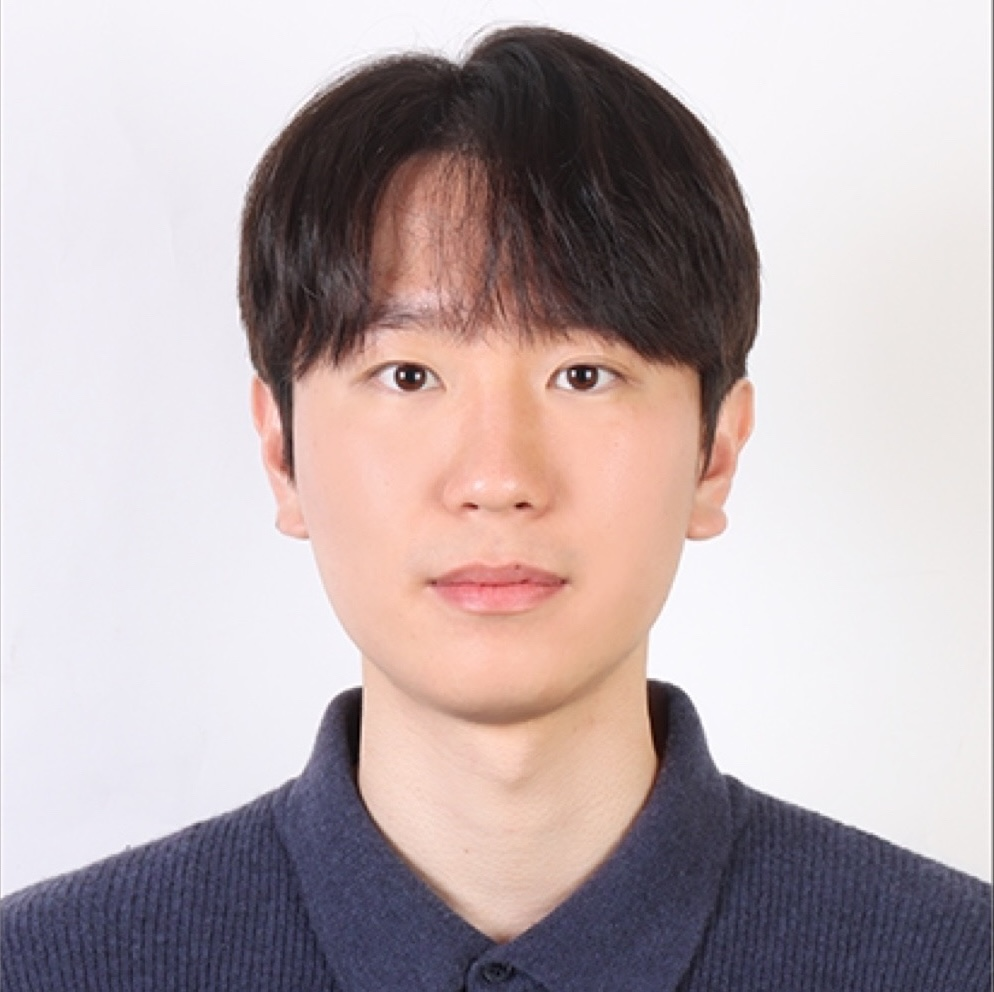

Ph.D. Student · Efficient AI
Do Yeong Kang
Dept. of Electrical & Computer Engineering, Georgia Institute of Technology
Hello! I am an incoming Ph.D. student in Electrical and Computer Engineering at the Georgia Institute of Technology, in the Green Lab with Prof. Saibal Mukhopadhyay. I recently completed my M.S. at Sungkyunkwan University (SKKU), advised by Prof. Jong Hwan Ko. I'm interested in (1) Model Compression with Low Rank Approximation and (2) Efficient Multi-Agent Systems & Communication. Previously, I worked on Hyperdimensional Computing (HDC) & In-Memory Computing (IMC).
News
- 2026.08 Starting my Ph.D. at the Georgia Institute of Technology (Green Lab), advised by Prof. Saibal Mukhopadhyay.
- 2026.06 2nd place at the Nota AI On-Device AI Optimization Challenge (NetsPresso On-Device LLM track).
- 2026.06 R-ESC accepted to ECCV 2026.
- 2026.05 HyperSPACE accepted to ISLPED 2026.
- 2025.06 Selected as a DAC Young Fellow.
- 2024.11 MEMHD accepted at DATE 2025.
Publications
* Corresponding author · † Equal contribution. Add PDF / arXiv / code links as they become available.
2026
Dynamic SVD via Token-Adaptive Basis Selection
D. Y. Kang, S. H. Han, J. G. Choo, K. E. Jeon*, J. H. Ko*
NeurIPS 2026 under review
R-ESC: Robustly Erasing Space Concepts via Stochastic Feature Remapping
K. E. Jeon, Y. S. Kang, D. Y. Kang, T. Y. Lee, G. M. Park*, J. H. Ko*
ECCV 2026 to appear
HyperSPACE: Sparse-Adder-Compatible Encoding for Efficient Hyperdimensional Computing on Digital CIM Arrays
Y. H. Oh, D. Y. Kang, J. Park, C. Hwang, K. E. Jeon*, J. H. Ko*
ISLPED 2026 to appear
Multi-Centroid Hyperdimensional Computing for Compact IMC Arrays via Dimension Pruning
D. Y. Kang†, Y. H. Oh†, C. Hwang, J. Kim, K. E. Jeon*, J. H. Ko*
IEEE Internet of Things Journal in revision
2025
MEMHD: Memory-Efficient Multi-Centroid Hyperdimensional Computing for Fully-Utilized In-Memory Computing Architectures
D. Y. Kang, Y. H. Oh, C. Hwang, J. Kim, K. E. Jeon*, J. H. Ko*
DATE 2025 Paper
2023
Implementation of Autonomous Parking System Using LiDAR-based Triangulation Method
E. J. Hwang, D. Y. Kang, J. H. Moon, H. Y. Seong, S. W. Lee, J. W. Jeon*
KIPS 2023 Paper
Awards & Honors
- On-Device AI Optimization Challenge — 2nd place (of 24 teams)
- Samsung Outstanding Poster Award
- DAC Young Fellow
- BK21 Scholarship
- Cross-disciplinary Research Award — 2nd place (of 16 teams)
- SKKU Autonomous Driving SW Competition — 3rd place (of 25 teams)
Teaching Assistant
- Data Structures and Algorithms
- On-Device AI